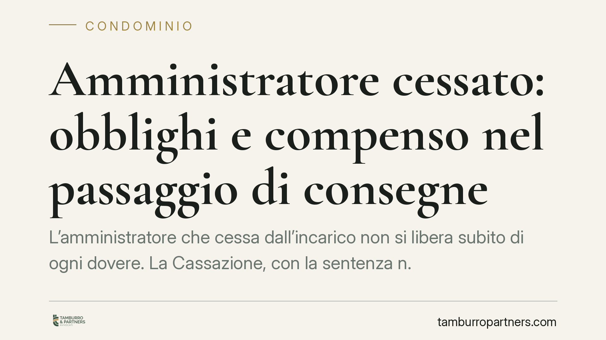

Amministratore cessato: obblighi e compenso nel passaggio di consegne
L'amministratore che cessa dall'incarico non si libera subito di ogni dovere. La Cassazione, con la sentenza n. 7247/2026, chiarisce quali attività restano obbligatorie e gratuite e in quali casi, invece, matura un diritto al compenso. Una distinzione che incide sul rapporto tra amministratore uscente, condominio e nuovo nominato.

Il caso e il principio della Cassazione
La cessazione dell'incarico di amministratore non segna la fine immediata di ogni responsabilità. Con la sentenza n. 7247/2026, la Corte di Cassazione ha fissato una linea netta tra due situazioni diverse, troppo spesso confuse nella prassi.
Da un lato, le attività del normale passaggio di consegne: restituzione della documentazione, trasmissione dei dati contabili, compimento degli atti urgenti. Dall'altro, l'ipotesi in cui l'assemblea non provvede a nominare il successore, lasciando l'amministratore uscente a gestire il condominio oltre la scadenza del mandato.
Nel primo caso l'obbligo è gratuito. Nel secondo, l'attività svolta può dare diritto a un compenso.
Inquadramento normativo
Il riferimento è l'art. 1129 del codice civile, che disciplina la nomina, la revoca e gli obblighi dell'amministratore. Il comma 8 impone all'amministratore cessato di eseguire le "attività urgenti" per evitare pregiudizi agli interessi comuni, senza diritto a ulteriori compensi.
La Cassazione qualifica questo dovere come obbligo strumentale ex lege: non nasce da un nuovo accordo con il condominio, ma discende direttamente dalla legge come proiezione dell'incarico appena concluso. Per "attività urgente" si intende ogni atto indifferibile la cui omissione produrrebbe un danno (ad esempio il pagamento di utenze essenziali o la riparazione di un guasto pericoloso).
La gratuità di tali atti è coerente con la loro natura: sono il completamento fisiologico del mandato, non una prestazione aggiuntiva. Diverso è il caso in cui il condominio, per inerzia dell'assemblea, continui a beneficiare dell'opera dell'amministratore uscente ben oltre il passaggio di consegne. Qui la prestazione non è più strumentale alla chiusura del rapporto, ma copre una gestione protratta: in tal caso la Corte riconosce il diritto a essere remunerati.
Implicazioni pratiche
Per l'amministratore uscente la distinzione è decisiva. Finché si tratta di consegnare documenti e gestire urgenze, non può pretendere alcun compenso: rifiutarsi espone a responsabilità. Ma se l'assemblea resta inerte e lo lascia operare nel vuoto gestionale, l'amministratore non lavora gratis a tempo indeterminato.
Per il condominio la lezione è opposta: l'inerzia costa. Non nominare tempestivamente il successore non significa risparmiare, perché l'amministratore di fatto che continua a gestire matura un credito.
Per il nuovo amministratore, infine, il passaggio di consegne diventa un momento da documentare con cura: verbali, elenchi della documentazione ricevuta, data effettiva del subentro. Sono gli elementi che permettono di stabilire dove finisce l'obbligo gratuito del predecessore e dove inizia la gestione remunerata.
Cosa fare in concreto
- Formalizzate il passaggio di consegne per iscritto: redigete un verbale con data certa e l'elenco analitico della documentazione trasmessa (contabilità, registro di anagrafe, contratti, polizze).
- Distinguete gli atti urgenti dalla gestione ordinaria: l'amministratore cessato compia solo gli atti indifferibili e ne tenga traccia, per dimostrarne la natura strumentale.
- Convocate tempestivamente l'assemblea per la nuova nomina: evitate i vuoti gestionali che generano, a carico del condominio, obbligazioni di compenso verso l'uscente.
- Documentate l'eventuale gestione protratta: se l'assemblea non provvede, l'amministratore annoti le attività svolte oltre la fase di consegna, a supporto di un'eventuale richiesta di compenso.
- Verificate i termini contrattuali e la scadenza del mandato: chiarire a monte durata e condizioni riduce il contenzioso sul momento di cessazione.
Una questione di confini
La pronuncia non introduce un nuovo onere, ma precisa un confine già presente nell'art. 1129 c.c. L'amministratore uscente deve collaborare alla transizione; il condominio deve attivarsi per non prolungarla artificialmente. Quando questi due doveri convivono ordinatamente, il passaggio è gratuito e lineare. Quando saltano, nasce il contenzioso.
La chiave resta la documentazione: è l'unico strumento che consente, a posteriori, di qualificare correttamente ogni attività e di attribuirne il costo alla parte giusta.
---
Contributo informativo a cura di Tamburro & Partners - Avv. Giuseppe Tamburro. Non costituisce parere legale.
Ogni condominio ha una storia a sé.
Se gestisci un'amministrazione e vuoi un confronto su una specifica questione condominiale, scrivi allo studio. Ti rispondiamo entro un giorno lavorativo.